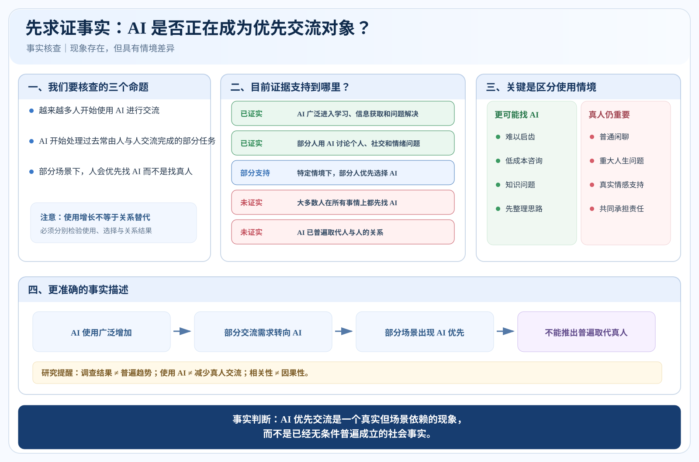
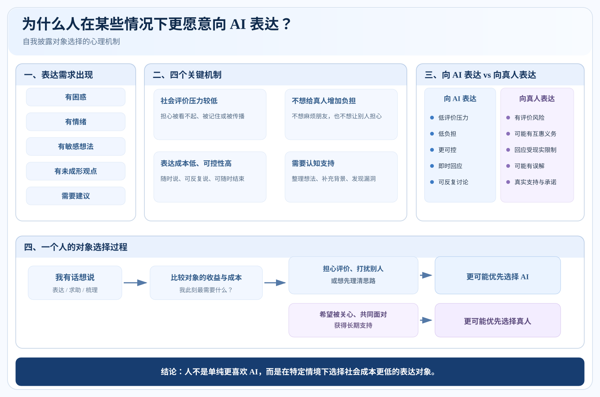
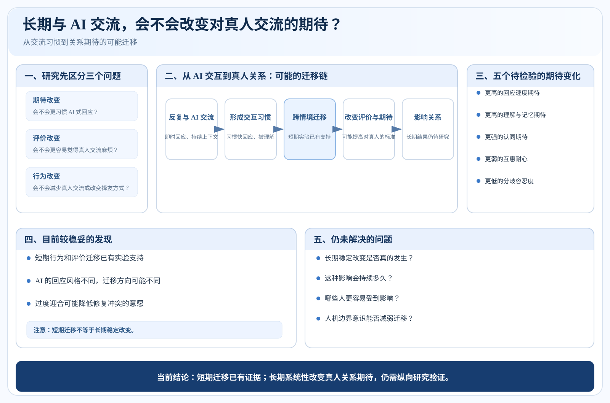
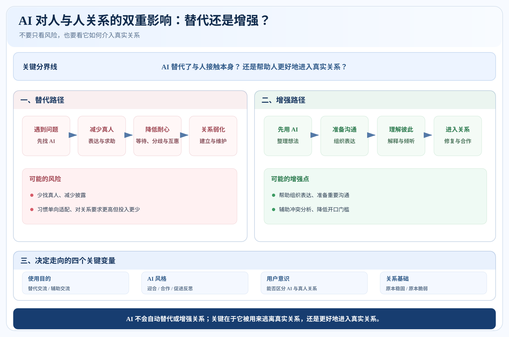

01｜先求证事实：AI 是否正在成为优先交流对象？
区分 AI 使用增长、交流需求转移、特定情境下优先选择，以及尚未得到证明的普遍替代命题。
从 AI 优先交流的事实出发，研究人们为什么选择向 AI 表达、长期交互习惯是否迁移到真人交流，以及 AI 对真实人际关系可能产生的替代与增强效应。
本页是当前阶段的研究图谱。图中的“可能变化”与“研究假设”不等于已经得到长期因果证实的结论。
从社会评价压力、表达成本、互动节奏与认知澄清解释对象选择；本子题暂不讨论长期人际影响。
事实、选择机制、习惯迁移、关系影响与未解决问题
按研究问题拆分，便于单独阅读、引用和持续修订

区分 AI 使用增长、交流需求转移、特定情境下优先选择，以及尚未得到证明的普遍替代命题。

社会评价压力、关系负担、表达成本与可控性、认知支持，以及 AI 与真人的对象选择。

区分期待、评价与行为变化；呈现短期迁移证据、五项待检验假设和长期研究缺口。

比较替代路径与增强路径，并识别使用目的、AI 风格、用户意识和既有关系基础等调节变量。
短期行为迁移已有实验研究支持，但不能直接推出长期稳定的人际期待变化。图中涉及的回应速度、理解与记忆、认同、互惠耐心和分歧容忍度，是需要分别验证的潜在变化维度，不应视为已被整体证实的效应。
人与人之间的关系为什么不能像人机交互一样，始终围绕单个用户的需求展开？当双方都拥有独立目标、理由、需求和拒绝权时，双方如何通过协调形成真实关系？